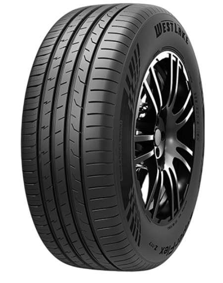

Westlake FLEX Z-117 175/70R13

RM 120.00
The Westlake ZuperFlex Z-117 is a high-performance passenger car tyre designed for responsive handling, driving comfort and fuel efficiency. Its four circumferential grooves promote rapid water drainage and improved wet road performance. The asymmetric tread pattern enhances cornering stability, while its chamfered grooves improve braking performance. Suitable for daily commuting and highway driving.
Klang Hock Li Tyre Services Sdn Bhd, Klang, Selangor, Malaysia.
View live product details and enquire